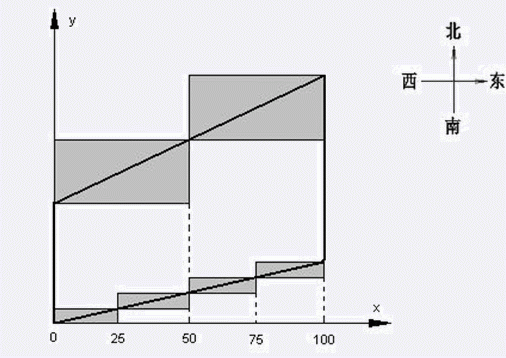

仅一行，包含4个数k1，k2，m，n。k1和k2为正实数，分别表示北墙和南墙的斜率，精确到小数点后第一位。m和n为正整数，分别表示北墙角和南墙角的草坪的块数。
小H发誓要做21世纪最伟大的数学家。他认为，做数学家与做歌星一样，第一步要作好包装，不然本事再大也推不出去。为此他决定先在自己的住所上下功夫，让人一看就知道里面住着一个“未来的大数学家”。 为了描述方便，我们以向东为x轴正方向，向北为y轴正方向，建立平面直角坐标系。小H的小屋东西长为100Hil（Hil是小H自己使用的长度单位，至于怎样折合成“m”，谁也不知道）。东墙和西墙均平行于y轴，北墙和南墙分别是斜率为k1和k2的直线，k1和k2为正实数。北墙和南墙的墙角处有很多块草坪，每块草坪都是一个矩形，矩形的每条边都平行于坐标轴。相邻两块草坪的接触点恰好在墙上，接触点的横坐标被称为它所在墙的“分点”，这些分点必须是1到99的整数。 小H认为，对称与不对称性的结合才能充分体现“数学美”。因此，在北墙角要有m块草坪，在南墙角要有n块草坪，并约定m≤n。如果记北墙和南墙的分点集合分别为X1，X2，则应满足X1 X2，即北墙的任何一个分点一定是南墙的分点。 由于小H目前还没有丰厚的收入，他必须把草坪的造价降到最低，即草坪的占地总面积最小。你能编程帮他解决这个难题吗？
仅一行，包含4个数k1，k2，m，n。k1和k2为正实数，分别表示北墙和南墙的斜率，精确到小数点后第一位。m和n为正整数，分别表示北墙角和南墙角的草坪的块数。
一个实数，表示草坪的最小占地总面积。精确到小数点后第一位。 2≤m≤n≤100 南北墙距离很远，不会出现南墙草坪和北墙草坪重叠的情况
0.5 0.2 2 4
3000.0